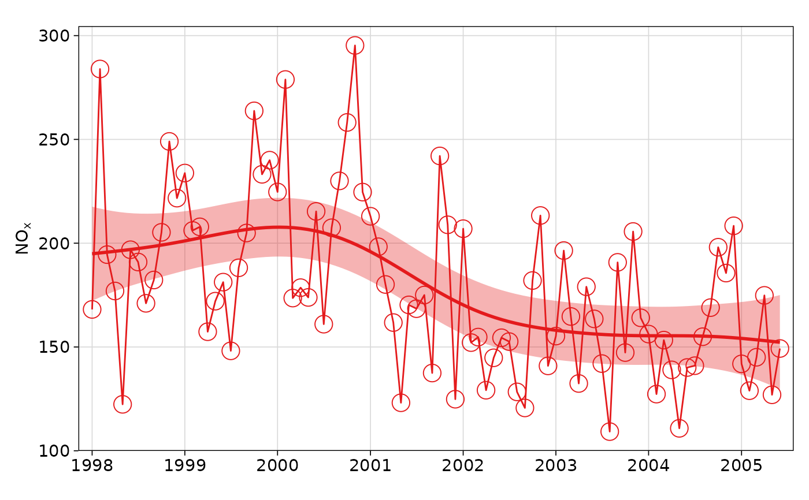

Use non-parametric methods to calculate time series trends
Usage
smoothTrend(
mydata,
pollutant = "nox",
avg.time = "month",
data.thresh = 0,
statistic = "mean",
percentile = NA,
k = NULL,
deseason = FALSE,
simulate = FALSE,
n = 200,
autocor = FALSE,
type = "default",
cols = "brewer1",
x.relation = "same",
y.relation = "same",
ref.x = NULL,
ref.y = NULL,
key.columns = 1,
key.position = "bottom",
strip.position = "top",
name.pol = NULL,
date.breaks = 7,
date.format = NULL,
auto.text = TRUE,
ci = TRUE,
alpha = 0.2,
progress = TRUE,
plot = TRUE,
key = NULL,
...
)Arguments
- mydata
A data frame of time series. Must include a
datefield and at least one variable to plot.- pollutant
Name of variable to plot. Two or more pollutants can be plotted, in which case a form like
pollutant = c("nox", "co")should be used.- avg.time
This defines the time period to average to. Can be
"sec","min","hour","day","DSTday","week","month","quarter"or"year". For much increased flexibility a number can precede these options followed by a space. For example, an average of 2 months would beavg.time = "2 month". In addition,avg.timecan equal"season", in which case 3-month seasonal values are calculated with spring defined as March, April, May and so on.Period boundary behaviour: how bin boundaries are determined depends on the type of period:
Single-unit periods (
"hour","day","week", etc.) are floored to the start of the enclosing unit in the data's timezone (e.g."day"floors to midnight).Multi-unit fixed-length periods (
"3 day","6 hour","2 week", etc.) use epoch-aligned arithmetic: bin boundaries are fixed multiples of the period length counted from 1970-01-01, so the same calendar dates always fall in the same bin regardless of where the data starts, and bins run continuously across month boundaries without resetting at the start of each month. For example, withavg.time = "3 day"a bin that begins on 29 January will end on 31 January, and the next bin begins on 1 February — the month boundary does not start a new bin.Calendar periods (
"month","quarter","year") are floored to the start of the enclosing calendar unit, so they correctly respect variable month and year lengths.
Note that
avg.timecan be less than the time interval of the original series, in which case the series is expanded to the new time interval. This is useful, for example, for calculating a 15-minute time series from an hourly one where an hourly value is repeated for each new 15-minute period. Note that when expanding data in this way it is necessary to ensure that the time interval of the original series is an exact multiple ofavg.timee.g. hour to 10 minutes, day to hour. Also, the input time series must have consistent time gaps between successive intervals so thattimeAverage()can work out how much 'padding' to apply. To pad-out data in this way choosefill = TRUE.- data.thresh
The data capture threshold to use (%). A value of zero means that all available data will be used in a particular period regardless if of the number of values available. Conversely, a value of 100 will mean that all data will need to be present for the average to be calculated, else it is recorded as
NA. See alsointerval,start.dateandend.dateto see whether it is advisable to set these other options.- statistic
Statistic used for calculating monthly values. Default is
"mean", but can also be"percentile". SeetimeAverage()for more details.- percentile
Percentile value(s) to use if
statistic = "percentile"is chosen. Can be a vector of numbers e.g.percentile = c(5, 50, 95)will plot the 5th, 50th and 95th percentile values together on the same plot.- k
This is the smoothing parameter used by the
mgcv::gam()function in packagemgcv. By default it is not used and the amount of smoothing is optimised automatically. However, sometimes it is useful to set the smoothing amount manually usingk.- deseason
Should the data be de-deasonalized first? If
TRUEthe functionstlis used (seasonal trend decomposition using loess). Note that ifTRUEmissing data are first imputed using a Kalman filter and Kalman smooth.- simulate
Should simulations be carried out to determine the Mann-Kendall tau and p-value. The default is
FALSE. IfTRUE, bootstrap simulations are undertaken, which also account for autocorrelation.- n
Number of bootstrap simulations if
simulate = TRUE.- autocor
Should autocorrelation be considered in the trend uncertainty estimates? The default is
FALSE. Generally, accounting for autocorrelation increases the uncertainty of the trend estimate sometimes by a large amount.- type
Character string(s) defining how data should be split/conditioned before plotting.
"default"produces a single panel using the entire dataset. Any other options will split the plot into different panels - a roughly square grid of panels if onetypeis given, or a 2D matrix of panels if twotypesare given.typeis always passed tocutData(), and can therefore be any of:A built-in type defined in
cutData()(e.g.,"season","year","weekday", etc.). For example,type = "season"will split the plot into four panels, one for each season.The name of a numeric column in
mydata, which will be split inton.levelsquantiles (defaulting to 4).The name of a character or factor column in
mydata, which will be used as-is. Commonly this could be a variable like"site"to ensure data from different monitoring sites are handled and presented separately. It could equally be any arbitrary column created by the user (e.g., whether a nearby possible pollutant source is active or not).
Most
openairplotting functions can take twotypearguments. If two are given, the first is used for the columns and the second for the rows.- cols
Colours to use for plotting. Can be a pre-set palette (e.g.,
"turbo","viridis","tol","Dark2", etc.) or a user-defined vector of R colours (e.g.,c("yellow", "green", "blue", "black")- seecolours()for a full list) or hex-codes (e.g.,c("#30123B", "#9CF649", "#7A0403")). SeeopenColours()for more details.- x.relation, y.relation
This determines how the x- and y-axis scales are plotted.
"same"ensures all panels use the same scale and"free"will use panel-specific scales. The latter is a useful setting when plotting data with very different values.- ref.x
See
ref.yfor details. In this case the correct date format should be used for a vertical line e.g.ref.x = list(v = as.POSIXct("2000-06-15"), lty = 5).- ref.y
A list with details of the horizontal lines to be added representing reference line(s). For example,
ref.y = list(h = 50, lty = 5)will add a dashed horizontal line at 50. Several lines can be plotted e.g.ref.y = list(h = c(50, 100), lty = c(1, 5), col = c("green", "blue")).- key.columns
Number of columns to be used in a categorical legend. With many categories a single column can make to key too wide. The user can thus choose to use several columns by setting
key.columnsto be less than the number of categories.- key.position
Location where the legend is to be placed. Allowed arguments include
"top","right","bottom","left"and"none", the last of which removes the legend entirely.- strip.position
Location where the facet 'strips' are located when using
type. When onetypeis provided, can be one of"left","right","bottom"or"top". When twotypes are provided, this argument defines whether the strips are "switched" and can take either"x","y", or"both". For example,"x"will switch the 'top' strip locations to the bottom of the plot.- name.pol
This option can be used to give alternative names for the variables plotted. Instead of taking the column headings as names, the user can supply replacements. For example, if a column had the name "nox" and the user wanted a different description, then setting
name.pol = "nox before change"can be used. If more than one pollutant is plotted then usece.g.name.pol = c("nox here", "o3 there").- date.breaks
Number of major x-axis intervals to use. The function will try and choose a sensible number of dates/times as well as formatting the date/time appropriately to the range being considered. The user can override this behaviour by adjusting the value of
date.breaksup or down.- date.format
This option controls the date format on the x-axis. A sensible format is chosen by default, but the user can set
date.formatto override this. For format types seestrptime(). For example, to format the date like "Jan-2012" setdate.format = "\%b-\%Y".- auto.text
Either
TRUE(default) orFALSE. IfTRUEtitles and axis labels will automatically try and format pollutant names and units properly, e.g., by subscripting the "2" in "NO2". Passed toquickText().- ci
Should confidence intervals be plotted? The default is
TRUE.- alpha
The alpha transparency of shaded confidence intervals - if plotted. A value of 0 is fully transparent and 1 is fully opaque.
- progress
Show a progress bar when many groups make up
type? Defaults toTRUE.- plot
When
openairplots are created they are automatically printed to the active graphics device.plot = FALSEdeactivates this behaviour. This may be useful when the plot data is of more interest, or the plot is required to appear later (e.g., later in a Quarto document, or to be saved to a file).- key
Deprecated; please use
key.position. IfFALSE, setskey.positionto"none".- ...
Addition options are passed on to
cutData()fortypehandling. Some additional arguments are also available:xlab,ylabandmainoverride the x-axis label, y-axis label, and plot title.ylimandxlimcontrol axis limits.layoutsets the layout of facets - e.g.,layout(2, 5)will have 2 columns and 5 rows.fontsizeoverrides the overall font size of the plot.cex,lwd,lty,alpha, andpchcontrol various graphical parameters.
Value
an openair object
Details
The smoothTrend() function provides a flexible way of estimating the trend
in the concentration of a pollutant or other variable. Monthly mean values
are calculated from an hourly (or higher resolution) or daily time series.
There is the option to deseasonalise the data if there is evidence of a
seasonal cycle.
smoothTrend() uses a Generalized Additive Model (GAM) from the
mgcv::gam() package to find the most appropriate level of smoothing. The
function is particularly suited to situations where trends are not monotonic
(see discussion with TheilSen() for more details on this). The
smoothTrend() function is particularly useful as an exploratory technique
e.g. to check how linear or non-linear trends are.
95% confidence intervals are shown by shading. Bootstrap estimates of the
confidence intervals are also available through the simulate option.
Residual resampling is used.
Trends can be considered in a very wide range of ways, controlled by setting
type - see examples below.
See also
Other time series and trend functions:
TheilSen(),
calendarPlot(),
timePlot(),
timeProp(),
timeVariation()
Examples
# trend plot for nox
smoothTrend(mydata, pollutant = "nox")

# trend plot by each of 8 wind sectors
if (FALSE) { # \dontrun{
smoothTrend(mydata, pollutant = "o3", type = "wd", ylab = "o3 (ppb)")
# several pollutants, no plotting symbol
smoothTrend(mydata, pollutant = c("no2", "o3", "pm10", "pm25"), pch = NA)
# percentiles
smoothTrend(mydata,
pollutant = "o3", statistic = "percentile",
percentile = 95
)
# several percentiles with control over lines used
smoothTrend(mydata,
pollutant = "o3", statistic = "percentile",
percentile = c(5, 50, 95), lwd = c(1, 2, 1), lty = c(5, 1, 5)
)
} # }